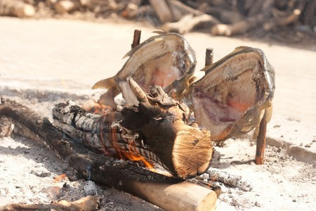
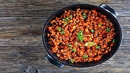
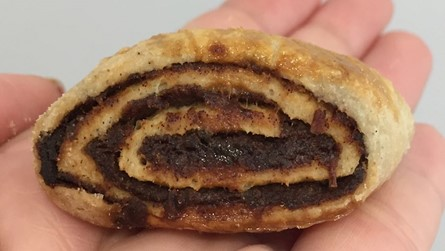
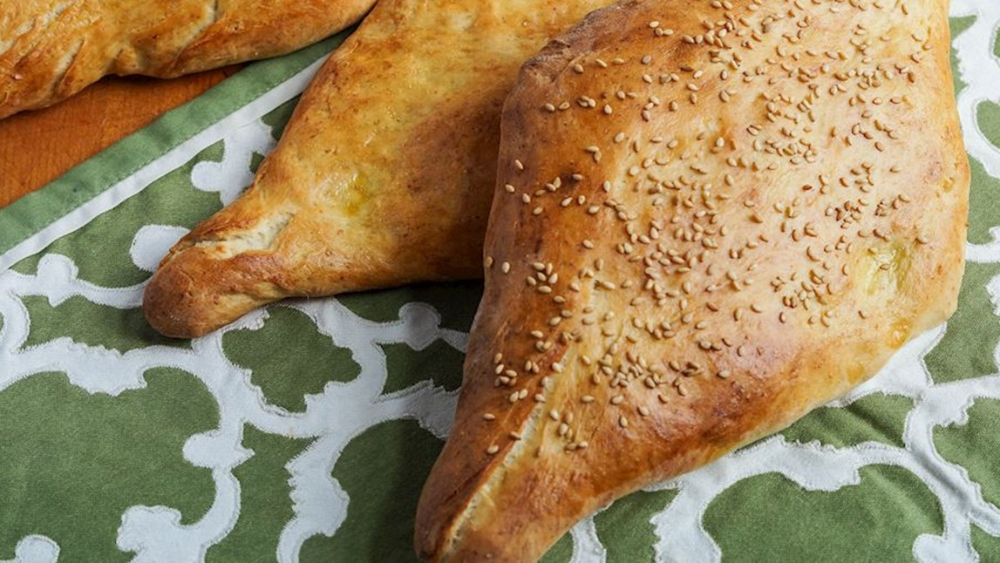
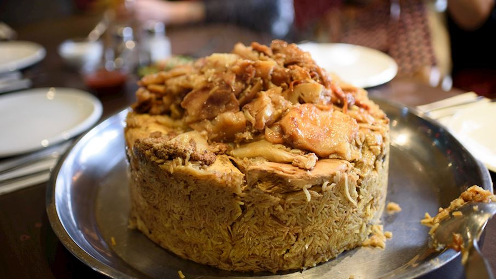
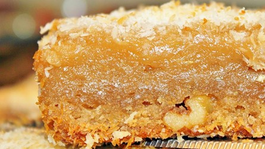
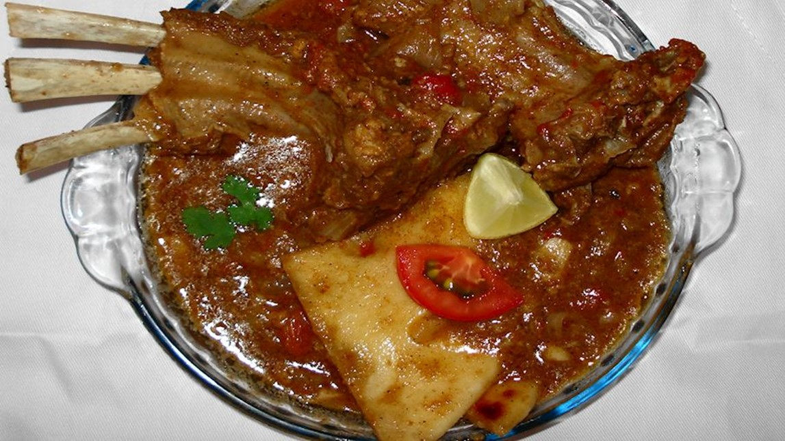
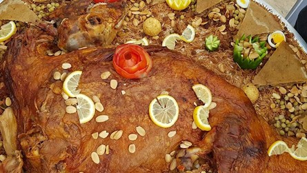
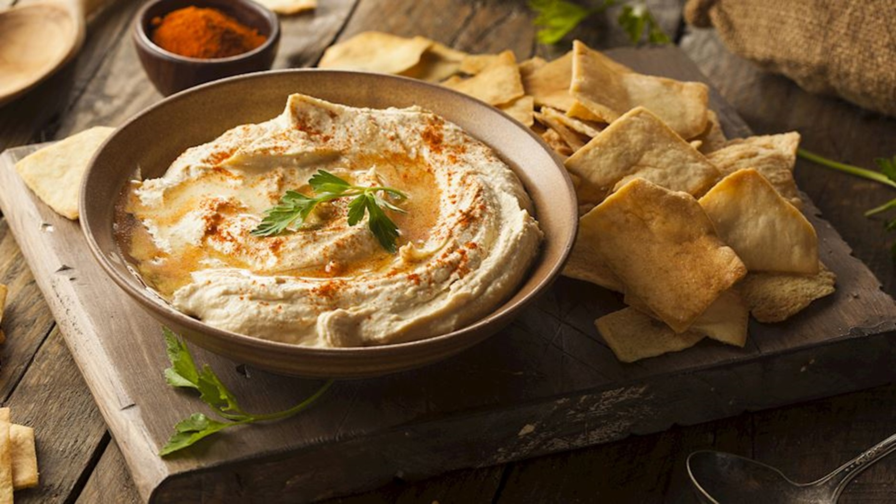

Masgouf
The traditional way of cooking masgouf
Easily one of the most recognizable Iraqi dishes, this is a slow-grilled fish famous because the Iraqi way of grilling it standing sideways and letting the fish cook in the flames and smoke from the side. Once finished, a generous amount of delicious sumac spice, fresh pomegranate seeds, and lemon are poured on top.
Margat Albamiya

This classic is one of the most common staples in any Iraqi household. A mixture of perfectly baked okra and tender lamb or beef in a spiced tomato-based stew, the textures and flavors of this dish can only be described as absolutely perfect.
Bagilla Bil Dihin

The key to any Iraqi breakfast is to have sizzling fried eggs
This is also a broth-soaked bread dish, but this one’s considered a breakfast meal. With layers of broth-soaked bread, it is topped with oil-fried eggs, onions, and boiled beans. Just remember that the true way to eat this Iraqi-style is to dig in with your hands.
Dips
Chelfray, with meat and vegetables
Tzatziki is made of strained yogurt (usually sheep's milk or goat's milk in Greece and Turkey) with cucumbers, garlic, salt, usually olive oil, pepper, dill, sometimes lemon juice and parsley, or mint added. The cucumbers are either puréed and strained, or seeded and finely diced. Olive oil, olives, and herbs are often used as garnishes.
Kleicha
Kleicha is a traditional Iraqi holiday cookie that's prepared for Eid, weddings, or birthdays. The cookies are made with flour, butter, yeast, cardamom, fennel, and nigella seeds. They are traditionally filled with a walnut filling (walnuts, sugar, cardamom) or a date filling (dates, butter, cardamom, cinnamon).Once baked, these festive cookies are usually served with a cup of tea on the side.
Samoon
Samoon is a traditional Iraqi yeast bread characterized by its unusual diamond shape. The bread is usually baked in a tandoor oven, and in Iraq, shops that sell samoon often have yellow diamonds painted on the outside to signify what awaits inside.
Samoon is often served for breakfast with cream or cheese on the side, although it is also commonly consumed with dips such as hummus or baba ghanoush. The bread can also be used for sandwiches, when it is typically split in half and filled with grilled meat.
Maqluba
Maqluba is the national dish of Palestine, but it can also be found in Iraq, Syria, and Jordan. This layered one-pot dish has many versions, but the basic principle is to turn it upside down before serving, which is what the word maqluba means.
The ingredients include rice, vegetables (often carrots, potatoes, tomatoes, cauliflower, onions), herbs and spices (often turmeric and sumac), and meat such as chicken or lamb, although the dish can be made without any meat. The ingredients are cooked and layered, then boiled until there's no liquid left.
Before serving, maqluba is flipped upside down, and it's then often garnished with pine nuts or chopped parsley on top. It's recommended to serve the dish with a cucumber and tomato salad, olives, and yogurt on the side.
Daheen
Daheen is a traditional Iraqi sweet originating from Najaf, where it is usually sold at street markets. It has a fudge-like texture and consists of flour, milk, sugar, clarified butter, and date syrup. Before serving, daheen is traditionally sprinkled with desiccated coconut.The dessert is named after the clarified butter used in its preparation, called dihin.
Tashreeb
Tashreeb is a term that may denote various dishes that consists of a bread topped with a different combination of ingredients. The base of the dish is made with Iraqi flatbread, and it usually comes topped with versatile stews that incorporate meat, chickpeas, beans, and various spices.
The dish is typically enjoyed as a communal meal, and the guests usually tear the bread, place it on the plate, and then ladle the stew over it. Tradition suggests using the bread to scoop the stew, rather than utensils.
Quzi
Quzi is an Iraqi dish that is prepared with rice and a whole roasted lamb. The lamb is occasionally stuffed with nuts, raisins, and various spices before it is roasted or cooked in underground ovens. The dish is seasoned with cinnamon, cardamom, and baharat—an aromatic blend of spices—and it is served on a bed of rice.
Similar varieties of the dish are enjoyed throughout the Levant, but the variations are especially popular in Arab countries such as the United Arab Emirates and Kuwait where they are better known as khuzi, ghuzi, or qouzi.
Tepsi baytinijan

Tepsi baytinijan is traditional Iraqi comfort food, a casserole consisting of layers of ground beef or lamb meatballs and vegetables such as eggplants, tomatoes, onions, potatoes, and peppers. The casserole is baked until the vegetables have slightly melted from the heat.This hearty dish is served straight out of the oven with some cooked rice, as most Iraqi dishes usually are.
Hummus
This internationally popular, beige-colored spread is traditionally made with mashed chickpeas, tahini sesame paste, lemon juice, and garlic. People across the world love hummus for its tangy flavor and the fact that it is filled with nutrients.
When served, it is typically dressed with a drizzle of olive oil, and is then used as a dip for vegetables or a flavorful filling for flatbreads such as pita. Even today, not much is known about its origins, although the earliest mention of hummus dates back to 13th-century Egypt.